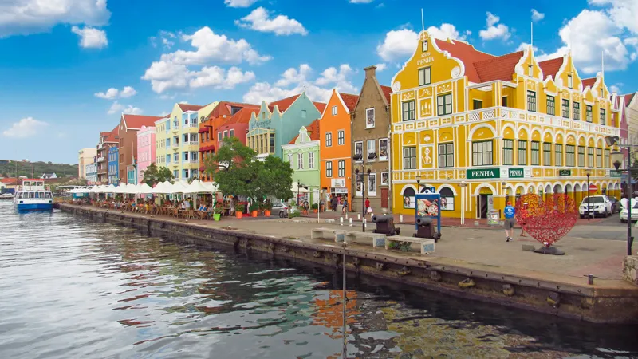

Sou Gustavo Vieira Ermelino, tenho 38 anos e moro em Curitiba, cidade onde nasci. Sou formado em Física pela UFPR e trabalho na área de engenharia de manutenção responsável pela automação industrial. Tenho grande interesse por programação de computadores, já fiz curso de programação em Python, C# e Fortran e atuamente estou cursando Engenharia de Software na Uninter. Estou sempre buscando melhorar meu inglês, faço aulas duas vezes por semana e diariamente escuto podcasts e leio noticias em inglês.
| Estados Unidos da América | |
| Curaçao |  |
| Japão | |